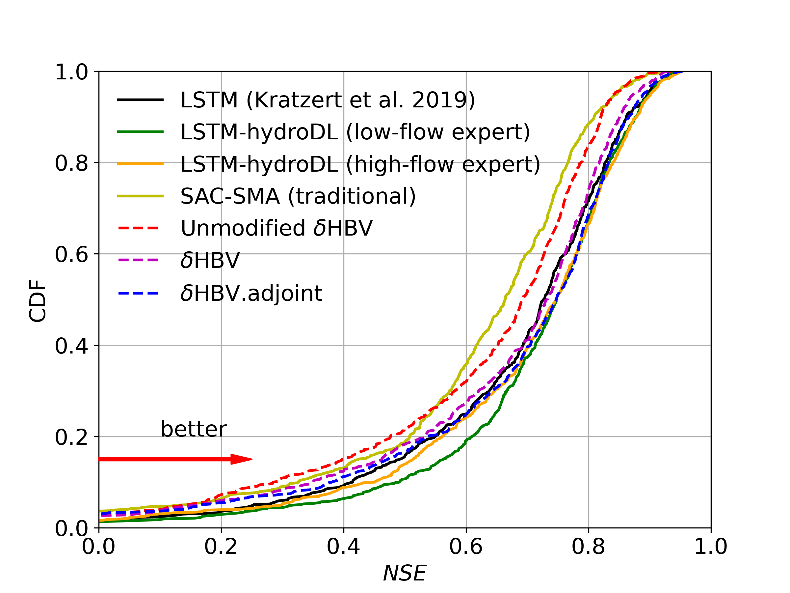
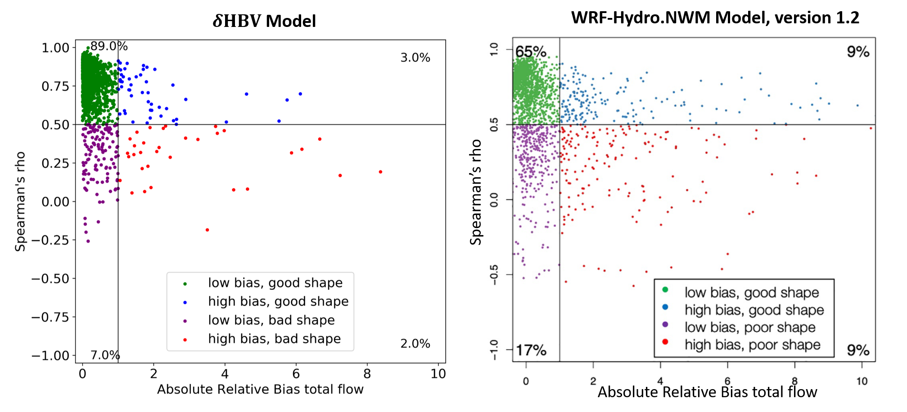
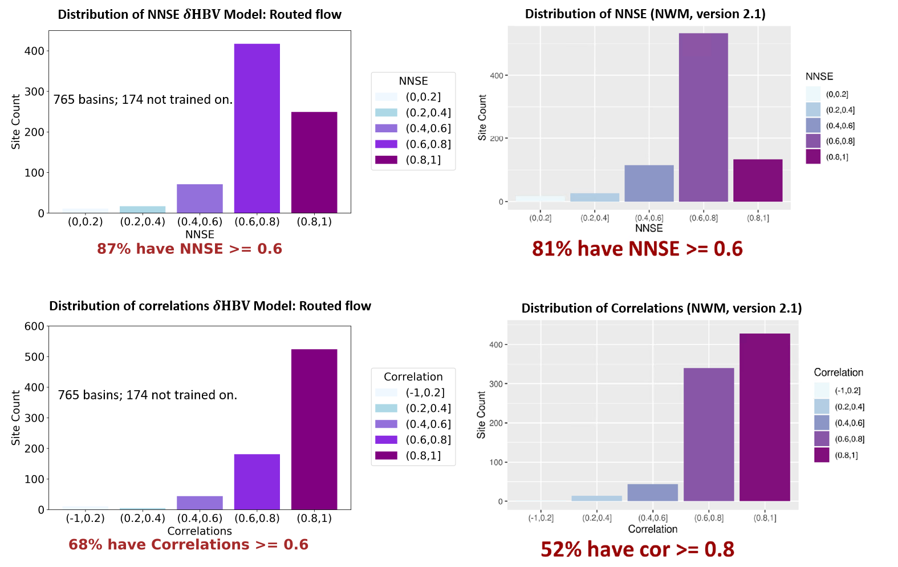
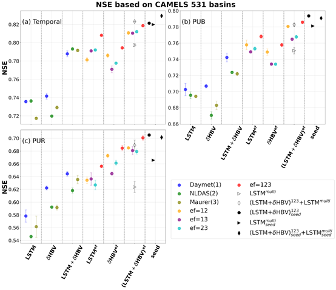

Benchmarks¶
We here provide comparisons to LSTM models on the CAMELS data (top of page) as well as comparisons to the current National Water Model at the national scale (bottom of this page), and more comparisons will be provided here.
We recently updated our LSTM, and you can find the high-flow expert on hydroDL repo's tutorial (see Codes tab on this website). The first and forecast benchmark is over the CAMELS dataset. The results can vary slightly due to training/test periods. Below you will find results for 10-year training (exactly as reported in Kratzert et al., 2019) and 15-year training (shown in this Figure). Besides NSE and KGE, we also report absolute FHV and FLV (these metrics have + or - signs, and they make more sense after taking the absolute sign) and low-flow and high-flow RMSE. So far, the best LSTM is LSTM-hydroDL (high-flow expert) and the best differentiable model is \(\delta\)HBV.adjoint (https://hess.copernicus.org/preprints/hess-2023-258/). As time goes on, we will also report benchmarks on the global dataset and other papers. We also know that spatial test (trained on some basins, tested on some other basins) or prediction in ungauged regions (PUR) tests (tested in a large region without training data) are more stringent tests and will likely change the comparisons. We previously found differentiable model to perform better in the PUR test (Feng et al., 2023 https://doi.org/10.5194/hess-27-2357-2023).
CDF Comparison¶

Metric Tables¶
10-year training comparison¶
Info
All models were trained from 1999/10/01 to 2008/09/30 and tested from 1989/10/01 to 1999/09/30 on the subset of 531 CAMELS basins.
| Model | Median NSE | Median KGE | Median Absolute (Non-Absolute) FLV (%) | Median Absolute (Non-Absolute) FHV (%) | Median low flow RMSE (mm/day) | Median peak flow RMSE (mm/day) |
|---|---|---|---|---|---|---|
| LSTM-hydroDL-single (high-flow expert) | 0.74 | 0.76 | 31.79 (-9.08) | 16.20 (-13.42) | 0.049 | 3.28 |
| LSTM-hydroDL-Ensemble (high-flow expert) | 0.765 | 0.77 | 28.84 (-3.88) | 16.21 (-13.38) | 0.046 | 3.27 |
| LSTM-single ran w/ code in Kratzert et al. (2019) | 0.74 | 0.75 | 32.02 (5.54) | 18.02 (-15.80) | 0.051 | 3.70 |
| LSTM-single (Kratzert et al. 2019) As reported | 0.731 | - | - (26.5) | - (-14.8) | - | - |
| LSTM-Ensemble (Kratzert et al. 2019) As reported | 0.758 | - | - (55.1) | - (-15.7) | - | - |
15-year training comparison¶
Info
All models were trained from 1980/10/01 to 1995/09/30 and tested from 1995/10/01 to 2010/09/30 on all 671 CAMELS basins.
| Model | Median NSE | Median KGE | Median Absolute (Non-Absolute) FLV (%) | Median Absolute (Non-Absolute) FHV (%) | Median low flow RMSE (mm/day) | Median peak flow RMSE (mm/day) | Baseflow index spatial correlation | Median NSE of temporal ET simulation |
|---|---|---|---|---|---|---|---|---|
| LSTM-hydroDL (low-flow expert) | 0.73 | 0.76 | 19.52 (12.21) | 15.01 (-4.12) | 0.023 | 2.67 | - | - |
| LSTM-hydroDL (high-flow expert) | 0.74 | 0.78 | 37.33 (-20.72) | 13.68 (-4.30) | 0.048 | 2.49 | - | - |
| LSTM ran w/ code in Kratzert et al. (2019) | 0.73 | 0.77 | 40.59 (29.70) | 13.46 (-4.19) | 0.055 | 2.56 | - | - |
| SAC-SMA (Traditional) | 0.66 | 0.73 | 59.40 (46.96) | 17.55 (-9.79) | 0.081 | 3.19 | - | - |
| Unmodified \(\delta\)HBV | 0.69 | 0.72 | 47.58 (16.84) | 16.40 (-10.80) | 0.066 | 2.74 | 0.76 | 0.43 |
| \(\delta\)HBV | 0.73 | 0.73 | 56.53 (50.93) | 15.29 (-8.89) | 0.074 | 2.56 | 0.76 | 0.59 |
| \(\delta\)HBV.adj (expert 1) | 0.72 | 0.75 | 43.29 (37.61) | 13.25 (-4.33) | 0.048 | 2.47 | 0.83 | 0.61 |
| \(\delta\)HBV.adj (expert 2) | 0.75 | 0.76 | 40.56 (32.78) | 14.09 (-7.97) | 0.045 | 2.59 | 0.87 | 0.62 |
Citations¶
Kratzert, Frederik, Daniel Klotz, Guy Shalev, Günter Klambauer, Sepp Hochreiter, and Grey
Nearing. "Benchmarking a catchment-aware long short-term memory network (LSTM) for
large-scale hydrological modeling." Hydrol. Earth Syst. Sci. Discuss 2019 (2019): 1-32.
Newman, Andrew J., Martyn P. Clark, Kevin Sampson, Andrew Wood, Lauren E. Hay, Andy Bock,
Roland J. Viger et al. "Development of a large-sample watershed-scale hydrometeorological
data set for the contiguous USA: data set characteristics and assessment of regional
variability in hydrologic model performance." Hydrology and Earth System Sciences 19, no. 1
(2015): 209-223.
Comparison with National Water Models¶
Funded by CIROH projects, we have produced initial comparisons at the continental scale showing the superior performance of the differentiable models compared to both NOAA’s first-generation WRF-Hydro.NWM Model, version 1.2 (Tijerina‐Kreuzer et al., 2021) and version 2.1 (Cosgrove et al., 2024). The differentiable routing model developed in our FY22 CIROH project is used for runoff routing using Muskingum-Cunge method. We are now producing seamless streamflow simulations at high spatial resolution for the whole CONUS and the results below are demonstrating one of the simulations. We are still improving the runoff, forcing, and routing aspects of the product. Several updates are incoming. Please stand by for a data release!


Ensemble performances¶
Significant benefits were achieved by ensembling δHBV and LSTM models across temporal, PUB (Prediction in Ungauged Basin), and PUR (Prediction in Ungauged region) tests. All models were trained from October 1, 1980 to September 30, 1995 on all 671 CAMELS basins, and tested from October 1, 1995 to September 30, 2008 on a selected set of 531 basins.

Citation:
Li, P., Song, Y., Pan, M., Lawson, K., & Shen, C. (2025). Ensembling Differentiable Process-based and Data-driven Models with Diverse Meteorological Forcing Datasets to Advance Streamflow Simulation. EGUsphere, 2025, 1–74. https://doi.org/10.5194/egusphere-2025-483